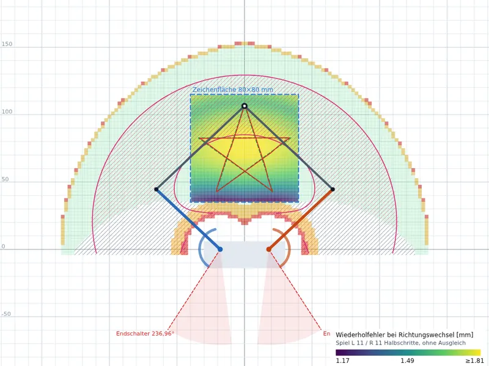

Kinematik-Simulator: Wie genau zeichnet ein Fünfgelenk?
Der PlotBot bewegt seinen Stift mit einer Fünfgelenkkette: Zwei Motoren drehen je einen Oberarm (65 mm), die Wellen stehen 36 mm auseinander. An jedem Oberarm hängt ein Unterarm (90 mm), beide treffen sich im Stift. Die Firmware rechnet aus der gewünschten Stiftposition die beiden Motorwinkel aus.
Der Simulator zeigt diese Rechnung von oben. Sie ziehen den Stift mit der Maus oder dem Finger und sehen, wie die Arme folgen. Farben zeigen, welche Punkte erreichbar sind, wo die Kette in eine Strecklage gerät und wie weit der Stift springt, wenn ein Motor einen Schritt macht.
Sie können Armlängen, Achsabstand, Zeichenfläche und Motor ändern und Testfiguren abfahren lassen. So sehen Sie, warum die Zeichenfläche 80 × 80 mm groß ist und wo sie liegt.
Wie die Firmware die beiden Motorwinkel findet, zeigt eine eigene Seite mit Zirkel und Lineal: Inverse Kinematik verstehen.

Was die Farben bedeuten
- Grün
- Diese Punkte erreicht der Stift, ohne dass die Kette umklappt.
- Orange und Rot
- Kritische Zonen: Ein Gelenk steht fast gestreckt oder die Unterarme liegen fast parallel. Dort reicht ein winziger Motorfehler für einen großen Stiftfehler.
- Heatmap
- Von Dunkelviolett (genau) bis Gelb (ungenau): wie weit der Stift versetzt landet, wenn das Getriebespiel bei einem Richtungswechsel wirkt. Wahlweise zeigt sie den Stiftweg je Motorschritt oder je Grad.
- Pinke Schraffur
- Hier stehen die Unterarme am Stift etwa im rechten Winkel (70–110°). Das ist der günstigste Bereich für die Zeichenfläche.
- Grau schraffiert
- Gesperrt: Die Oberarme würden sich kreuzen oder ihren Schwenkbereich verlassen.
Zum Ausprobieren braucht der Simulator JavaScript. Die Bedienung ist für einen großen Bildschirm gedacht, auf dem Handy liegen die Regler unter der Zeichnung.
- Oberarm links
- Oberarm rechts
- Unterarme
- Zeichenfläche
- erreichbar
- Gelenkwinkel < 20°
- < 10° (singulär)
- Unterarme ≈ 90°
- ×realer Stift im Schrittraster
- gesperrt (Softlimit)
- Grenze des Schwenkbereichs